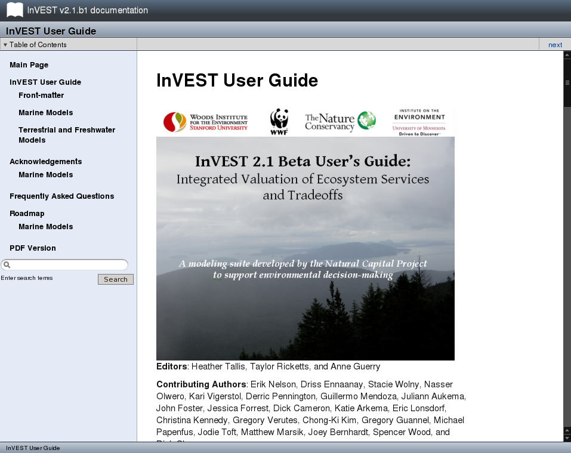
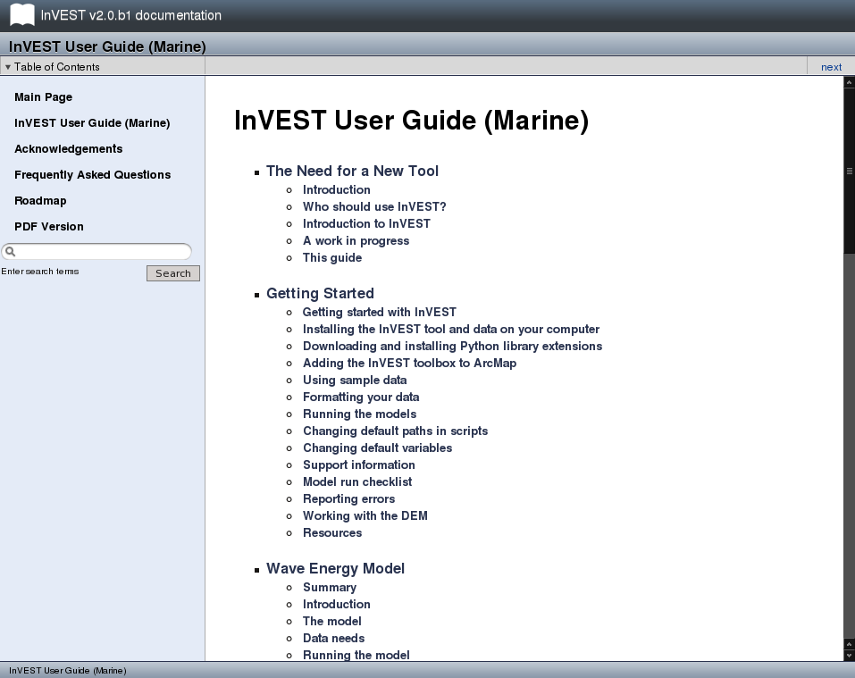

InVEST Documentation
Current version
This documentation is for the current stable version of InVEST.
User's Guide (version 2.1 beta)
Legacy versions
While we recommend that users run the latest version of the InVEST software, documentation for older packages is available below.
User's Guide (version 2.0 beta)